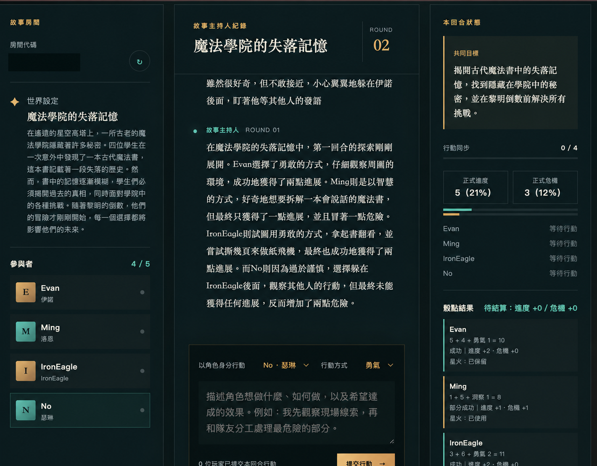

共同輸入
規則結算
同步敘事
01 AWS 雲端工程師培訓期末專題
共演計劃在雲端一起創作
使用可部署、可觀測、可回復的產品架構，建構多人互動與 AI 編排故事系統。
02 PRODUCT OVERVIEW
各自天馬行空AI 續寫故事一起迎向結局
玩家在同一房間建立角色，各自描述想採取的行動。
系統依規則擲骰並公布結果，再由生成式 AI 續寫成共同故事。

03 POTENTIAL APPLICATIONS
同一套協作核心延伸不同應用場景
多人輸入、共享狀態、流程規則與 AI 整理的設計，
也能延伸到其他多人協作場景。
多人發言
議題整理
行動摘要
角色任務
情境評估
回顧復盤
範圍說明目前完成作品為多人文字 RPG，其餘為潛在應用構想。
04 FIRST AWS ARCHITECTURE
了解產品需求選擇相應服務
網站需要讓玩家從網路進入、安全保存共同進度，並使用生成式 AI 續寫故事；第一版選用 EC2、RDS 與 Bedrock 完成可運作的雲端架構。

05 ARCHITECTURE EVOLUTION
同步轉非同步
第一版由網站伺服器直接等待 AI 生成故事；生成時間拉長時，網站入口、故事工作與部署風險會集中在一起。
- 網站等待故事回應
- 入口與故事責任集中
- 故障影響玩家操作

06 CURRENT PRODUCTION
依職責劃分網段入口公開、運算資料私有
玩家只連到公開網站入口；故事工作與資料庫位於私有網段，
再透過指定路徑連接 AWS 託管服務。

現況限制｜單一 Web EC2、RDS Single-AZ、兩台 Worker 位於同一 Availability Zone、單一 NAT Gateway；尚未配置負載平衡與自動擴縮。
07 RELIABLE ASYNC WORK
快速接收行動背景完成故事
網站先接受玩家行動，再把故事工作交給佇列與背景伺服器。
- 01建立工作
記錄玩家行動與故事需求
- 02送入佇列
Publisher 把工作交給 SQS
- 03可靠交付
失敗工作保留在 DLQ
- 04Worker 接手
私有伺服器在背景處理
- 05生成故事
Bedrock 依既定結果續寫
- 06寫回結果
完成後更新共同故事
安全重試即使重新提交需求，系統也只保留一次有效結果。
08 SOFTWARE BOUNDARIES
組件化上雲增加架構彈性故障隔離
將程式依責任拆分，前端負責玩家操作，後端處理房間狀態與遊戲規則；資料庫、生成式 AI 與維運功能透過明確介面接入，讓各部分可以分別調整。
前端
後端
AWS 服務
09 AUTOMATED DELIVERY
可驗證、可回復核准後自動上線
提交版本後，測試、建置、安全掃描與正式環境更新依固定流程執行；工程師只需核准正式發布，系統會驗證上線結果，失敗時回復已驗證版本。
自動部署前
工程師逐項處理：本機測試 → 手動封裝 → 上傳 S3 → 連入環境 → 安裝依賴 → 切換服務 → 健康檢查 → 失敗時手動回復
自動部署後
核准正式環境後，系統自動取得短期權限，接續完成測試、ARM64 建置、digest 掃描、ECR 保存、SSM 更新、健康檢查與失敗回復。
8 個發布環節1 次人工核准失敗自動回復
10 SECURITY BY BOUNDARY
入口分層開放服務限制來源發布必須核准
玩家只能透過 HTTPS 進入公開網站；背景伺服器不接受外部連線，資料庫只允許指定的應用服務存取。
玩家經 Internet Gateway 進入 Nginx，並關閉公開 SSH。
Worker 無 public IP，只透過 NAT Gateway 對外呼叫。
只有 Web SG 與 Worker SG 能連到 DB SG。
GitHub OIDC、instance role 與人工核准限制正式環境操作。
11 OBSERVE AND OPERATE
看見訊號執行受控處置留下紀錄
CloudWatch 集中收集安全日誌、效能指標與告警；AI 協助整理可能原因與建議動作，再由維運人員決定是否執行受限檢查。
只記錄允許的欄位
健康狀態、延遲與錯誤
彙整症狀、影響與建議
確認處置範圍與方式
免 SSH 執行健康檢查
免 public SSH訊號 → 建議 → 人工決策 → 受控動作
12 COST STEWARDSHIP
成本透明建立費用邊界持續運作
專案透過預算告警掌握支出，分別管理持續運作與實際使用產生的費用；日誌、映像與暫存檔案設有保存期限，展示完成後依計畫清理資源。
費用告警門檻US$35AWS Budget alert
EC2、RDS 與 NAT Gateway 採最小合理規格。
Bedrock、CloudWatch、SQS 與 ECR 依用量或保存量計費。
日誌與映像設有期限；清理資源後再複查帳單。
13 BOUNDED AI
規則先定責任可控
故事主持人依規則續寫；規則助理回答玩法。
STORY HOST
故事主持人
後端規則→Nova Lite 續寫→共同故事
Amazon Bedrock 依擲骰、成功等級、進度與危機續寫，不改變玩家行動。
RULES ASSISTANT
規則助理
玩法問題→引用規則→清楚回答
deterministic cited lookup；未涵蓋時回覆資訊不足，目前不使用 LLM、RAG 或向量資料庫。
14 LIVE DEMO
成品展示
共演計劃已完成 AWS 正式環境部署。
接下來透過實際操作，展示玩家體驗與背後的雲端工作流程。
- 01進入房間
開啟正式環境並加入遊戲
- 02建立角色
設定名稱與故事背景
- 03自由行動
描述這一回合想做的事
- 04背景續寫故事
觀察工作入列與結果更新
- 05規則查詢
確認已實作玩法與限制
現在，進入共演計劃。